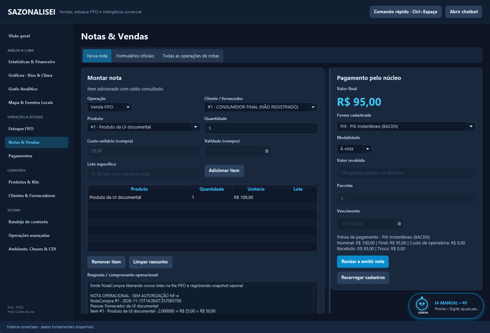

Entrega refeita a partir dos três arquivos enviados pelo projeto. As implementações anteriores não fazem parte deste pacote. Esta camada adicional usa o núcleo original em Documents/PDV-javafx-av2 (main 7cc6a01), sem substituir arquivos existentes.
powershell -NoProfile -ExecutionPolicy Bypass -File .\iniciar_ui_documentada.ps1 -Nucleo "$env:USERPROFILE\Documents\PDV-javafx-av2"
Se o núcleo estiver em outro lugar, troque o caminho pela pasta que contém o pom.xml original. Se este módulo estiver diretamente dentro do repositório, o argumento -Nucleo pode ser omitido.
Também é possível usar iniciar.bat. O script compila em .build desta pasta e verifica hashes dos arquivos existentes antes e depois. Não edita o pom.xml nem executa os scripts antigos.
O ambiente deste módulo fica em .build/ambiente. Seus dados não são automaticamente os mesmos da execução anterior do projeto. O runtime recebe uma cópia própria da configuração de persistência embarcada H2 em modo MySQL. Nenhuma configuração original é sobrescrita. A inicialização cadastra apenas os dados fundamentais pela rota oficial; não apaga o banco nem importa automaticamente a carga histórica.
O chatbot inicia em modo manual, sem exigir chave externa. Os comandos oficiais e a bandeja funcionam nesse modo. Recursos de IA externa, voz, imagem, Sympla, clima e mapas dependem das configurações, credenciais e serviços aceitos pelo núcleo. Este pacote não inclui chaves e não ativa um provedor de IA externo.
| Área | Comportamento |
|---|---|
| Navegação JavaFX | Visão geral com contagens reais, estatísticas, gráficos, grafo, mapa, estoque, notas, pagamentos, produtos, pessoas, bandeja e configurações. |
| Telas oficiais | Reutilização dos componentes gráficos e do estilo existentes. Não há cópia modificada do backend. |
| Rotas documentadas | 85 operações selecionáveis e 190 campos extraídos do HTML, com parâmetros tipados, pesquisa, JSON adicional, retorno do backend e exportação textual. |
| Nova nota | Compra, venda FIFO, balcão e lote específico; vários itens, quantidade, custo, validade e pessoa. Pagamentos e valores calculados pelas rotas do núcleo. PIX e débito usam o valor retornado pelo backend; dinheiro oferece valor recebido. |
| Bandeja | Sessão compartilhada com o chatbot oficial; consulta, confirmação SIM/NÃO e comandos de operação. Alterações propostas pelo chatbot seguem a bandeja oficial. |
| Comando rápido | Ctrl+Espaço/F2 abre entrada rápida. Comandos abrir>janela>… navegam entre os módulos; demais entradas são encaminhadas ao chatbot. |
Formulários manuais solicitam confirmação para operações de alteração. Em Notas & Vendas, use Nova nota para construir e emitir documentos novos com itens; o formulário genérico é uma ferramenta de parâmetros e referências às rotas, não substitui esse editor.
Visão geral · Formulário de rota · Compra emitida · Bandeja

Executado em 15/11/2026 com JDK 26, compilação direcionada ao Java 21 e H2 isolado. Resultado: 210 verificações aprovadas. Incluem montagem dos formulários das 85 rotas e seus campos, cadastro real de produto e fornecedor, emissão real de compra de um produto com quantidade 2, cálculo de PIX de compra e venda, proposta DSL sem gravação antecipada, confirmação SIM e leitura do produto persistido, ajuda do terminal e montagem dos módulos oficiais.
A venda foi montada e teve o pagamento calculado; a emissão da venda e todas as modalidades financeiras não foram verificadas nesse cenário. Ter formulário para 85 rotas não significa ter executado 85 cenários completos.
Limitação observada no núcleo: alguns relatórios falham no H2 devido a funções/procedimentos MySQL ausentes e expressões SQL incompatíveis. Os componentes oficiais são exibidos com os retornos do próprio núcleo. Esses problemas não foram corrigidos porque a instrução do projeto proíbe alterar o backend. Integrações externas e todos os relatórios não foram validados com credenciais ou MySQL real.
O preenchimento automático de campos a partir de DSL, descrito como evolução nos documentos, não foi implementado. O comando rápido navega e encaminha comandos; a execução da DSL permanece no terminal/gateway oficial. O comprovante exibido é operacional, sem autorização fiscal de NF-e.
powershell -NoProfile -ExecutionPolicy Bypass -File .\iniciar_ui_documentada.ps1 -Nucleo "$env:USERPROFILE\Documents\PDV-javafx-av2" -Validar
A validação cria banco H2 em memória e ambiente próprio; não reseta o banco de uso. As imagens em evidencias foram produzidas por essa execução real. A suíte original completa do backend não foi executada nesta entrega.
Acrescente -Modo Oficial para a interface original, -Modo Terminal para o chatbot original ou -Modo MCP para o servidor MCP. -Modo Carga inicia o ConsoleResetEIntegracao original no ambiente próprio: leia as opções e os pedidos de confirmação do programa, pois esse modo pode apagar dados desse ambiente. Não é necessário para abrir as telas.
Fontes exclusivas de requisitos: Documentacao_Completa_Sazonalisei_e_ChatBotTerminal.pdf; documentacao_arquitetura_rotas.html; SKILL DO PROJETO.txt. Os hashes estão em fontes-utilizadas.json. A regra “ZERO ALTERAÇÃO” do arquivo de orientação foi aplicada aos arquivos existentes.
A camada está no pacote br.com.senac.ui.documentada. SistemaGateway/RoteadorSistemaGateway concentram as operações; as telas não acessam DAO, JPA, driver MySQL ou serviços de IA diretamente. Objetos de modelo são usados somente como dados exigidos pelas rotas. As operações executam em segundo plano e as atualizações visuais retornam à thread JavaFX.
Diferenças de nomes entre documentação e núcleo foram adaptadas apenas na interface: tokenConfirmacao → confirmacao; novoNome → nome na atualização de pessoa; lotesEQuantidades → lotesDesejados. O catálogo contém 85 rotas e nove domínios; o cabeçalho do HTML menciona oito, divergindo de sua própria listagem e da orientação do projeto.
Hashes de preservação dos 212 arquivos existentes. Código novo em java; catálogo e CSS em recursos; teste de integração em testes. O script compila o núcleo original somente para esta pasta .build.
Nada foi publicado no GitHub. Copie apenas esta pasta nova para o clone e crie uma branch, por exemplo codex/ui-documentada. Revise e adicione somente a nova pasta; não use git add . sobre mudanças antigas. A pasta .build é ignorada e não deve ser enviada. Faça o commit e abra o Pull Request para revisão do Igor. Não inclua bancos, configurações com credenciais nem os pacotes anteriores nesta entrega.